pIqaD, And How to Read It
 [ Preface |
The Alphabet |
Consonants |
Vowels |
Stress |
Numerals |
References |
Vocabulary ]
[ Preface |
The Alphabet |
Consonants |
Vowels |
Stress |
Numerals |
References |
Vocabulary ]
Contents
- Preface
- The Klingon Alphabet (pIqaD)
- The Consonants
- The Vowels
- Stress
- The Numerals
- References
- Vocabulary
- Future Additions?
[ Preface |
The Alphabet |
Consonants |
Vowels |
Stress |
Numerals |
References |
Vocabulary ]
Preface
| | Throughout this document a
green left margin denotes that the text is a quote from Okrandian
Canon... |
| | ...while a red such is
indicate that the text is a quote from some other
material. |
This is the beginning of an investigation into the Klingon
alphabet and its typographical and phonological nuances. Since there
does not really exist any canon Klingon alphabet (Okrand
speaks about pIqaD but he never makes use of it.) I have
adopted the KLI approved alphabet, used by most klingonists.
Paramount themselves use a typeface constructed by the Image Astra
Corporation containing only ten glyphs, but since this is the
Klingon alphabet we see in the movies and in Star Trek: The Next
Generation, I intend to do a comparison between the two, and
hopefully be able to create a typeface which looks more like the
pIqaD we see on the silver screen.
I also intend to do a survey of the different styles of useage of
pIqaD among klingonists (mainly on the Internet, but other
contributions are also welcome if you have any) to see how much one
can actually play around with the glyphs and still be able read
them.
There are also some interesting GIF-files in KLI’s FTP-area
created and uploaded by Nick Nicholas, one of the people behind the
restored version of the Klingon Hamlet. They are very interesting as
they show what seems to be pIqaD written with a ballpen, a
calligraphy pen (sort of frakture, perhaps used in the first printed books
on Kronos?) and with a brush.
Worth mentioning is also the article “Writing Klingon: The
Easy Way” by Theron P. Elliot, (published in HolQeD 2:2
pp.10–11) in which he uses a triangular grid as a basis for writing
pIqaD. It is interesting mostly because is also shows the
direction of the pen while writing, but otherwise I do not think
that the grid makes the Klingon glyphs justice.
Interstellar Language School (lead by Glen F. Proechel) has
published “An Alien Writing System Primer” explaining how to write pIqaD
in longhand. (It is non-canon, of course—and to my knowledge not even
endorsed by the KLI.)
Thanks go to Nick Nicholas for his constructive critisism and helpful
suggestions.
[ Preface |
The Alphabet |
Consonants |
Vowels |
Stress |
Numerals |
References |
Vocabulary ]
The Klingon Alphabet (pIqaD)
| | More recently we’ve been
treated to a different alphabet, (often incorrectly attributed to Michael
Okuda, scenic designer for TNG), one which corresponds to the
phonemes of Klingon as described by Okrand in TKD. While the
characters themselves are easily indentifiable from background displays on
TNG (assuming one has access to video equipment and a reasonably
large television screen), there has never been an “official” release
describing the particular relationship between individual glyphs and
specific sounds. As Okuda has indicated (...) all Klingon background
displays are composed for appearance, not communication. And yet, an
unofficial letter to a Klingon fan group from an unnamed source at
Paramount resulted in the following alphabet:
 |
 |
 |
 |
 |
 |
 |
 |
 |
| a | b | ch |
D | e | gh |
H | I | j |
 |
 |
 |
 |
 |
 |
 |
 |
 |
| l | m | n |
ng | o | p |
q | Q | r |
 |
 |
 |
 |
 |
 |
 |
 |
| S | t | tlh |
u | v | w |
y | ’ |
| [Note: Characters have been
rearranged slightly to presented them in correct Okrandian alphabetic
order.] |
Unlike its predecessor, these glyphs provide an excellent fit to
the phonology of Klingon, or more specifically that of tlhIngan Hol.
However, other questions still remain.
The keen observer of ST6 will note several Klingon glyphs
which are not included in the alphabet above. While some appear to be
simple rotations of characters (and one is reminded of Sequoyah’s creation
of the Cherokee syllabary), other appear to be completely novel. That they
are not included in the alphabet need not necessarily be cause for
distress, nor tempt us to suspect the assignment of sound to sign. Our own
writing system is replete with logographs, single characters representing
whole ideas or words (e.g., !, @, #, $, %), clearly a part of the system
but not a part of the alphabet.
Then too, it may be helpful to keep in mind Allan Wechsler’s
remarks (...) on the sparse distribution of consonants in tlhIngan
Hol. While perhaps a bit far fetched, the unexplained characters might be
instances of alphabetic characters from an earlier, and phonemically
larger, form of the language, maintained either for historical purposes in
affairs of state (I refer here to the trial scene in ST6), or more
simply as decoration.
In any case, there is clearly much much more to be learned about
Klingon orthography, more tantilizing promises and secrects to be
discovered. Of course it’s unknown whether any futher explanations are apt
to be forthcoming, but at least the exotica is there. Or, to make the case
more clear by example, what precisely is “the Klingon mummification glyph,”
and what is its role in a larger writing
system? [HolQeD 1:1
p. 19, Lawrence M. Schoen] |
| I have also (quite recently) learned that there seems to
exist a “canon” set of Klingon punctuation marks, used on the SkyBox
trading cards in their “pIqaD” text. Though the use is somewhat
inconsistent on these cards I would like to concur with Nick Nicholas
interpretation that the upturned triangle funtion as a full stop (period)
and the downturned triangle as a comma / semicolon. These are also the
only punctuation marks that the Klingon language really requires, since
both both questions and imperatives are clearly marked grammatically.

|
[ Preface |
The Alphabet |
Consonants |
Vowels |
Stress |
Numerals |
References |
Vocabulary ]
The Consonants
| | As in English
bronchitis or gazebo. Some Klingons pronounce this sound as
if it were m and b articulated almost simultaneously.
Speakers of English can approximate this sound by saying imbalance
without the intitial i sound. A very small number of Klingons
pronounce b as if it were m. [TKD
1.1] |
| | In ta’ Hol, b
is pronounced the same as b in Federation Standard bribe. In
the Krotmag dialect of Klingon, however, b and m are
pronounced identically, both of them sounding like Federation Standard
m as in mime. [KGT
p. 18] |
| | Speaking in a manner that is
sort of between that of the Krotmag region and ta’ Hol are the
peoples of Tak’ev (taq’ev), who, though still a minority population,
greatly outnumber the residents of Krotmag. These people maintain the
distinction between b and m but pronounce the b as if
it were mb; that is, starting off as the m sound but ending
up at a b. [KGT p. 22] |
|
voiceless palato-alveolar affricate
(i.e. alveolar stop + palato-alveolar fricative) |
| | As in English chew or
artichoke. [TKD 1.1] |
|
| voiced retroflex (i.e. apico-postalveolar) stop |
| | This sound is close to
English d in dream or android, but it is not quite the
same. The English d sound is made by touching the tip of the tongue
to that part of the roof of the mouth just behind the upper teeth. Klingon
D can best be approximated by English-speakers by touching the tip
of the tongue to the roof of the mouth at a point about halfway between the
teeth and the velum (or soft palate), that part of the roof of the mouth
that is rather gooshy. As with Klingon b, some speakers pronounce
D as if it were more like an nd, and a distinct minority as
if it were n—but, of course, with the tongue in the same position
as for D. [TKD 1.1] |
| | The sound at the end of the
first syllable of this word, toD, is D. To make this sound,
point the tip of your tongue directly upwards, and touch the hard part of
the roof of your mouth, and the do the same thing you would do to make a
d sound. [CK] |
| | For instance Dal.
means It is boring. To get the first sound in that word right make
sure your tongue is pointed straight up towards the roof of your
mouth. [PK] |
| | Krotmag dialect speakers
have a distinctive pronounciation of D as well: it sounds like
n, except the tip of the tongue touches a point in the middle of the
roof of the mouth rather than one behind the top teeth as it does for
n. (For the sake of clarity in this discussion the way Krotmag
dialect speakers pronounce D will be written N, to
distingguish if from n.) The D sound in ta’ Hol is
also produced with the tongue pointing upward and not near the teeth (just
like N), but otherwise the D sound is similar to that of
Federation Standard d as in did. For speakers in the Krotmag
region, the sounds n and N are distinct (...)
Speakers of other forms of Klingon, on the other hand, find the
Krotmag pronounciation of N and n to be so similar as to be
indistinguishable. When trying to speak in the Krotmag manner, they tend to
produce all words with D as if they used n instead, rather
than N, making it possible for a true Krotmag speaker to
differentiate a fellow resident from an outsider, but also making
communication difficult. [KGT
pp. 20–21] |
| | Speaking in a manner that is
sort of between that of the Krotmag region and ta’ Hol are the
peoples of Tak’ev (taq’ev), (...) D is pronouced more
like nD (or, more accurately, ND). [KGT
p. 22] |
|
 |
|
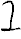 |
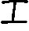 |
|
| voiced velar fricative |
| | This is not like anything in
English. It can be produced by putting the tongue in the same position it
would be in to say English g as in gobble, but relaxing the
tongue somewhat and humming. It is the same as Klingon H (see
below), but with the vocal cords vibrating at the same time. [TKD 1.1] |
| | The first sound of the word
is gh. It’s the same as the last sound of toDSaH, but hum
while you say it. [CK] |
|
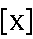 |
|
 |
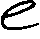 |
|
| voiceless velar fricative |
| | This is also not like
anything in English, but it is just like ch in the name of the
German composer Bach or in the Yiddish toast l’chaim, or the
j in the Mexican city of Tijuana in Baja California.
It is produced in the same way as Klingon gh, but is articulated
with a very coarse, strong rasp. Unlike Klingon gh, the vocal cords
do not vibrate in saying Klingon H. [TKD
1.1] |
| | The last sound in the word
is H, this is the same as the sound at the end of the name of the
ancient Terran composer Bach. You’d make it the same way you make a
k sound, but force air out of your mouth at the same time. [CK] |
|
voiced palato-alveolar affricate
(i.e. alveolar stop + palato-alveolar fricative) |
| | As in English junk;
never ever as in French jour. [TKD
1.1] |
|
|
|
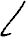 |
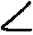 |
|
| voiced alveolar lateral approximant |
| | As in English lunge
or alchemy. [TKD 1.1] |
| | As in English mud or
pneumatic. Those few Klingons who pronounce b as m
would say Klingon baH fire (a torpedo) and maH
we the same way, and have to memorize which word is spelled which
way. [TKD 1.1] |
| | As in English
nectarine or sunspot. Those Klingons who pronounce D
more like n can easily articulate and hear the two sounds
differently. Even a D that sounds like n is pronounced with
the tongue in the Klingon D position, not in the English d
position. Klingon n is produced with the tongue in same position as
English d. [TKD 1.1] |
| | As in English
furlong; never as in in English engulf. The g is never
pronounced as a separate sound. This sound never occurs at the beginning of
an English word, but it does come at the beginning at a number of Klingon
words. English-speakers may practice making this sound at the beginning of
a word by saying English dang it!, then saying it again without the
da. [TKD 1.1] |
| | The sound at the beginning
of the second syllable, ngan, is the same as the sound that comes at
the end of the word thing or hang. [CK] |
| | That sound in the middle of
the last word is the same as the sound in the end of the federation
standard thing. Be sure to say ngev, not nev or
njev. [PK] |
|
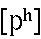 |
|
 |
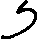 |
|
| aspirated voiceless bilabial stop |
| | As in English
parallax or opprobrium. It is always articulated with a
strong puff or pop, never laxy. Speakers of English may want to exercise
care to avoid discharging saliva while articulating this sound. It should
be noted, however, that Klingons do not worry about this. [TKD
1.1] |
|
| aspirated voiceless uvular stop |
| | Similar to English k
in kumquat, but not quite that. The tongue position for English
k is like that for Klingon gh and H. Indeed, the
tongue reaches for or touches the uvula (the fleshy blob that dangles down
from the back of the roof of the mouth), so articulating q
approximates the sound of choking. The sound is usually accompanied by a
slight puff of air. English speakers are reminded that Klingon q is
never pronounced kw as in the beginning of English quagmire.
[TKD 1.1] |
| | There’s a new sound at both
the beginning and end of the second syllable qeq, be careful, this
is not the federation standard k sound. You make it like a k,
but as you did for Q, shove the back of your tongue as far back into
your mouth as you can. [CK] |
| | -qoq Be sure you
pronounce the sound at the beginning and end of this suffix as far back in
your mouth as you can. [PK] |
|
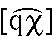 |
|
 |
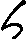 |
|
voiceless uvular affricate
(i.e. uvular stop + uvular fricative) |
| | This is like nothing
particulary noteworthy in English. It is and overdone Klingon q. It
is identical to q except that it is very guttural and raspy and
strongly articulated, somewhat like a blend of Klingon q and
H. [TKD 1.1] |
| | The word begins with the
common Klingon sound Q. To make this sound, put the back of your
tongue as far back into your mouth as you can, then force the air up
harshly, as if you’re trying to dislodge a piece of food. [CK] |
|
| voiced apico-alveolar trill |
| | This is not like the
r in American English, but it does resemble the r in some
dialects of British English, as well as the r in many languages of
Europe. It is slightly trilled or rolled. [TKD
1.1] |
|
 |
|
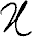 |
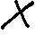 |
|
| voiceless retroflex (i.e. apico-postalveolar) fricative |
| | This sound is halfway
between English s and sh, as in syringe and
shuttlecock. It is made with the tip of the tongue reaching toward
that part of the roof of the mouth which it touches to produce the Klingon
D. [TKD 1.1] |
| | The sound at the beginning
of the second syllable, SaH, is S. It’s not quite either the
s or the sh sound you’re familiar with. For the Klingon
S, put your tongue in the same place you did to make the D
sound, and say it with me. [CK] |
 |
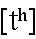 |
|
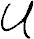 |
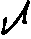 |
|
| aspirated voiceless alveolar or dental stop |
| | As in English
tarpaulin or critique. It differs from Klingon D in
two ways: (1) like p, it is accompanied by a puff of air; and (2)
the tongue touches a position on the roof of the mouth father forward than
that for D. [TKD 1.1] |
|
alveolar lateral affricate
(i.e. voiceless alveolar stop + voiceless alveolar lateral fricative) |
| | This sound does not occur in
English, but is very much like the final sound in tetl, the Aztec
word for egg, if properly pronounced. To produce this sound, the tip
of the tongue touches the same part of the roof of the mouth it touches for
t, the sides of the tongue are lowered away from the side upper
teeth, adn the air is forced through the space on both sides between tongue
and teeth. The sound is produced with a great deal of friction, and the
warning given in the description of Klingon p might be aptly
repeated here. [TKD 1.1] |
| | To make this tlh
sound, say a t and at the same time whisper, loudly, but still just
whisper, an l. [...] Do you feel the sides of the tongue going down
as you say the sound?—You should. [CK] |
| | The speech of residents of
the planet Morska has some indentifiable phonological characteristics also.
Most striking is the absence of the sound tlh. Syllables ending with
tlh in most dialects end with ts (pronounced the same as
ts in Federation Standard cats) in the Morskan dialect; at
the beginning of syllables, instead of saying tlh, Morskans say
something that sounds very much like a combination of standard Klingon
gh and l—that is, ghl. [KGT
p. 22] |
|
| voiced labio-dental fricative |
| | As in English vulgar
or demonstrative. [TKD 1.1] |
 |
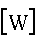 |
|
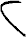 |
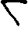 |
|
| voiced rounded labiovelar approximant |
| | Usually as ing English
worrywart or cow. On rare occasions, especially if the
speaker is being rather deliberate, it is pronounced strongly, more like
Hw or even Huv. [TKD
1.1] |
|
| voiced palatal central approximant |
| | As in English yodel
or joy. [TKD 1.1] |
| | The apostrophe indicates a
sound which is frequently uttered, but not written, in English. It is a
glottal stop, the slight catch in the throat between the two syllables of
uh-oh or unh-unh, meaning “no.” When Klingon ’ comes
at the end of a word, the vowel preceeding the ’ is often repeated
in a very soft whisper, as if an echo. Thus, Klingon je’ feed
almost sound like je’e, where the articulation of the first e
is abruptly cut off by the ’, and the second e is an barely
audible whisper. When ’ follows w or y at the end of a
word, there is often a whispered, echoed u or I respectively.
Occasionally the echo is quite audible, with a guttural sound like
gh preceeding the echoed vowel. For example, yIlI’
transmit it! can sound more like yIlI’ghI. This extra-heavy
echo is heard most often when the speaker is particulary excited or angry.
[TKD 1.1] |
| | Did you hear the sounds
cut off abruptly in the middle of the word? The correct pronounciation is
Qu’vatlh, not Quvatlh. This abrupt cut-off is a very common
feature of Klingon, you’ll hear it a lot. [CK] |
| | -na’ Notice how the
sound stops abruptly at the end of this suffix, it’s -na’, not
-na. [PK] |
| | Many nonnative speakers of
Klingon, especially those for whom Federation Standard is a first language,
seem to have trouble with ’, the glottal stop, at the end of a word.
Articulated correctly, ’ is simply a very abrupt cessation of
vocalization. The most common mispronunciation of ’ is as q,
though some newer speakers leave ’ off altogether. Errors of this
type could lead to confusion or confrontation. [KGT
pp. 194–195] |
| Consonant inventory of Klingon |
| |
Bilabial |
Labio-
dental |
Apico-
alveolar |
Apico-
palatoalveolar
(possibly) |
Apico-
domal
(retroflex) |
Dorso-
velar |
Dorso-
uvular |
Glottal |
| Stop |
|
|
|
|
|
|
|
|
| Fricative |
|
|
|
|
|
|
|
|
| Affricate |
|
|
|
|
|
|
|
|
| Nasal Stop |
|
|
|
|
|
|
|
|
| Glides |
|
|
|
|
|
|
|
|
| Trill |
|
|
|
|
|
|
|
|
| Lateral |
|
|
|
|
|
|
|
|
| Lateral Affricate |
|
|
|
|
|
|
|
|
|
| Where characters appear in pairs, the one to the right represents a voiced consonant. |
| Source: HolQeD 1:1, p. 4 |
[ Preface |
The Alphabet |
Consonants |
Vowels |
Stress |
Numerals |
References |
Vocabulary ]
The Vowels
| | A third characteristic of
the Krotmag accent is the nasal quality of the vowels, caused by the air
being expelled though the mount and nose at the same time while speaking.
This in no way impedes communication with speakers of other dialects, but
it does give the dialect a distinct tone. [KGT
p. 21] |
| | The nasal vowel quality
found in the Krotmag region is characteristic of Tak’ev speech as well.
[KGT p. 22] |
|
| low back unrounded vowel (tense) |
| | As in English psalm;
never as in American English crabapple. [TKD
1.2] |
 |
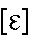 |
|
|
|
|
| lower-mid front unrounded (lax) |
| | As in English sensor.
[TKD 1.2] |
|
| semi-high front unrounded vowel (lax) |
| | As English i in
misfit. Once in a while, it is pronounced like i in
zucchini, but this is very rare and it is not yet known exactly what
circumstances account for it. [TKD
1.2] |
|
| upper-mid back rounded (tense) |
| | As in English mosaic.
[TKD 1.2] |
|
| high back rounded (tense) |
| | As in English gnu or
prune; never as in but or cute. [TKD
1.2] |
| Vowel inventory of Klingon |
| [-cons] |
[+front]
[-back] |
[-front]
[-back] |
[+round]
[+tense]
[-front]
[+back] |
[+high]
[-low] | I | | u |
[-high]
[-low] | e | | o |
[-high]
[+low] | | a | |
|
| Source: HolQeD 1:1, p. 3 |
[ Preface |
The Alphabet |
Consonants |
Vowels |
Stress |
Numerals |
References |
Vocabulary ]
Stress
The below reasoning is based on the comments on stress made by
Okrand in TKD (section 1.3), and additional analysis of the “rough
pronunciation guide” (which is the only transcription with stress
marked) in the “cheat sheet” section (pages 170–172) in the same
work.
| | Each Klingon word of
more than one syllable normally contains one stressed (or accented)
syllable. The stressed syllable is pronounced at a slightly higher
pitch and with a little more force than the nonstressed syllable(s).
In a verb, the stressed syllable is usually the verb
itself, as opposed to any prefix or suffix. If, however, a suffix
ending with ’ is separated from the verb by at least one
other suffix, both the verb and the suffix ending in ’ are
stressed. In addition, if the meaning of any particular suffix is to
be emphasized, the stress may shift to that syllable. Suffixes
indicating negation or emphasis (section 4.3) are frequently
stressed, as is the interrogative suffix (section 4.2.9).
In a noun, the stressed syllable is usually the syllable
right before the first noun suffix, or the final syllable if there
is no suffix. If, however, a syllable ending in ’ is present,
it is usually stressed instead. If there are two syllables in a row
’ both ending in ’, both are equally stressed.
Finally, it should be noted that there are some words
which seem to have variable stress patterns, with the stress
sometimes heard on one syllable and sometimes on another. This
phenomenon is not yet understood. The rules given above do not
account for this variability, but if they are followed, stress will
wind up on acceptable syllables.
In the system used to transcribe Klingon in this
dictionary, stress is not indicated. [TKD
§1.3] |
I have also relied on the notes on stress and rythm in klingon,
made in KLI’s new edition of Hamlet (Appendix II, pages
215–216) for disambiguation when such have been needed.
| | Readers who wish do
declaim Khamlet properly should be aware that the notes on
stress in Okrand (2292), while accurate, are not always explicit.
Therefore, the following brief guide may be of some help:
Nouns are stressed on the final syllable of the stem: ghóp
hand, puyjáq nova, bortáS
revenge. Any suffixes added on to the stem are not stressed:
puyjáqvam this nova, bortáSmey revenges.
However, if any syllable in a noun, whether in the stem or in a
suffix, ends in a glottal stop, it is stressed instead of the the
stem’s final syllable. Thus: bó’DIj court,
ghopDú’ hands, puyjaqvó’ from the nova.
Adjacent syllables ending in glottal stops receive equal stress:
chú’wÍ’ trigger, although Klingon verse tends to
stress the latter. Note that nouns derived from verbs are considered
nouns: vúm to work, vumwÍ’ worker,
vumtaHghách working, vumpú’ghach a bout of
work.
Verbs are likewise stressed on the final syllable of the stem:
Dál to be boring, ghIpDÍj to
court-martial. Unlike nouns, if the first suffix after the verb
ends in a glottal stop, the suffix is not stressed. Thus the
verb she has been an alien is nóvpu’, while the noun
aliens in novpú’. If the suffix ending in a glottal
stop is other than the first, then both it and the final
syllable of the verb re stressed: mughIpDÍjchoHDÍ’ when
she started court-martialling me, HóH’eghrupmó’
because he was ready to suicide.
Semantically important suffixes can end up stressed instead of
the verb stem. In practice in Klingon metre (which systematises this
tendency) negative and interrogative suffixes are always
stressed: jIDalbé’ I am not boring, bImatlhHá’
you are disloyal, luDelQó’ they refuse to describe
it, chol’á’ is he coming? Note that adjectival
verbs are considered verbs: ’útlh mátlhqu’ a truly loyal
officer. There are often cases where monosyllabic verbs and
nouns are juxtaposed. In this text, adjectival verbs and subject
nouns tend to be stressed more strongly, following an iambic
pattern. Thus ’utlh mátlh a loyal officer, matlh
’útlh the officer is loyal. [Hamlet,
Appendix II]
|
From this I have extrapolated the following rules for determining
which syllables should recieve stress:
Nouns:
- The final syllable of the noun stem is stressed (except if
another syllable in the word ends in a glottal stop, see below).
- If any syllable (a suffix or a syllable in the noun stem) ends
in a glottal stop it is stressed instead.
- If there are more than one syllable ending in a glottal stop,
they are equally stressed.
- Nouns derived from verbs (using -wI’ or -ghach) are
considered nouns.
- Compound nouns are stressed as simple nouns (i.e. only the last
noun’s final syllable is actually considered a true final
syllable).
Verbs:
- The prefix is never stressed.
- The final syllable of the verb stem is stressed (except if a
suffix is emphasized, see below).
- The first verb suffix is not stressed (except if it is
emphasized, see below).
- All suffixes, apart from the first, are stressed if they end
in a glottal stop. (unless some suffix is emphasized, see
below).
- If a suffix is emphasized, then it is the *only* syllable in
the word that is stressed.
The most commonly emphasized suffixes are the ones indicating
negatation (-be’/-Ha’/-Qo’), emphasis
(-qu’) and the interrogative suffix (-’a’).
- Adjectival verbs are considered verbs.
Exclamations (adverbials etc?):
- The final syllable is stressed.
[ Preface |
The Alphabet |
Consonants |
Vowels |
Stress |
Numerals |
References |
Vocabulary ]
The Numerals
| | Klingon originally
had a ternary number system; that is, one based on three. Counting
proceeded as follows: 1, 2, 3; 3+1, 3+2, 3+3; 2×3+1, 2×3+2, 2×3+3;
3×3+1, 3×3+2, 3×3+3; and the it got complicated. In accordance with
the more accepted practice, the Klingon Empire sometime back adopted
a decimal number system, one based on ten.
Though no one knows for sure, it is likely that this
change was made more out of concern for understanding the scientific
data of other civilizations than out of a spirit of cooperation.
[TKD pp. 52–53] |
| | Older Klingon music
was based on a nonatonic scale—that is, one made up of nine tones.
Each tone has a specific name, comparable to the “do, re, mi” system
used in describing music on Earth. The nine tone names are (the
first and ninth, as with Earth’s “do,” being the same): yu,
bIm, ’egh, loS, vagh, jav,
Soch, chorgh, yu. While the first three (and
ninth) of these words apparently are used only for singing the
scale, the remaining five are also numerals: loS, “four”;
vagh, “five”; jav, “six”; Soch, “seven”;
chorgh, “eight.” It is possible that, at some time in the
past, the numerals were “borrowed” into the lexicon of music in
order to sing the scale but, for some reason, the first three
(presumably wa’, cha’, wej [“one, two, three”])
were either changed or never used. It is far more likely, however,
that the borrowing went in the other direction. As is well
documented, the Klingon counting system was originally a ternary
system (one based on three, with numbers higher than three formed
from the words for “one,” “two,” and “three”). Later, owing to
outside influences, it changed to a decimal system (based on ten).
The independent words for the numbers three through nine were not
originally a part of the Klingon counting system, but they had to
come from somewhere. The musical scale is the likely source. The
word for the fourth musical tone, loS, began to be used for
the number four, and so on through the eighth tone, chorgh.
(The origins of the words Hut [“nine”] and the suffix
-maH, used in the words for “ten,” “twenty,” “thirty,” and so
on, are obscure.) [KGT
pp. 72–73] |
| Value |
Pronunciation |
pIqaD |
Name |
|
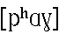 |
 |
|
zero,
none |
| 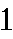 |
 |
 |
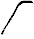 |
one |
|
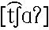 |
 |
 |
two |
|
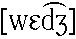 |
 |
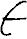 |
three |
 |
 |
 |
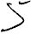 |
four |
 |
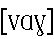 |
 |
 |
five |
 |
 |
 |
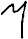 |
six |
 |
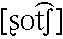 |
 |
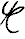 |
seven |
|
 |
 |
 |
eight |
|
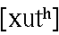 |
 |
 |
nine |
[ Preface |
The Alphabet |
Consonants |
Vowels |
Stress |
Numerals |
References |
Vocabulary ]
References
- Elliot, Theron P. “Writing Klingon: The Easy Way.” In
HolQeD, Volume 2, Number 2 (June 1993). Lake Forest:
Klingon Language Institute.
- Okrand, Marc. 1992. The Klingon Dictionary. New York: Pocket
Books, Simon & Schuster Inc.
- Okrand, Marc. 1992. Conversational Klingon. Audio cassette. New
York: Simon & Schuster Audioworks.
- Okrand, Marc, and Levine, Barry. 1993. Power Klingon. Audio
cassette. New York: Simon & Schuster Audioworks.
- Okrand, Marc. 1997. Klingon for the Galactic Traveler. New York:
Pocket Books, Simon & Schuster Inc.
- Pullum, Geoffrey K., and Ladusaw, William A. 1986. Phonetic Symbol
Guide. Chicago: The University of Chicago Press.
- Schoen, Lawrence M. “Some Comments on Orthography” In
HolQeD, Volume 1, Number 1 (March 1992). Lake Forest:
Klingon Language Institute.
- Schoen, Lawrence M. “Numerals” In HolQeD, Volume 1,
Number 4 (December 1992). Lake Forest: Klingon Language Institute.
- Wechsler, Allan C. “First Steps Towards a Phonological Theory of
Klingon.” In HolQeD, Volume 1, Number 1 (March 1992).
Lake Forest: Klingon Language Institute.
- Wells, Teresa Lynn. 1996. A Survey of the Artificial Language
tlhIngan Hol: From Creation to Creativity. A Thesis
Presented in Partial Fulfillment of the Requirements for the Degree
Master of Arts at Arizona State University. Unpublished.
[ Preface |
The Alphabet |
Consonants |
Vowels |
Stress |
Numerals |
References |
Vocabulary ]
Vocabulary
Affricate. Consonant composed of initial stop phase followed by
a release phase taking the form of a homorganic fricative.
Alveolar. Relating to the alveolar ridge, the bony ridge behind
the upper teeth.
Apical. Relating to the apex (tip) of the tongue.
Apico-alveolar.
Articulation involving the tip of the tongue and the alveolar ridge,
Apico-postalveolar.
|||||||||||||||||||||||||||||||||||||||||||||||||||||||||||||||||||||||||||||||| No explanation written yet.
Approximant. Frictionless continuant. For Ladgefoged, who coined
the term (1964), a consonantal sound articulated in a manner involving an
opening in the oral tract not radical enough to produce audible friction;
thus, IPA [j], [w], [l], etc. Catford (1977, 119–22) refines this, defining
approximants as having non-turbulent airflow when voiced but tubulent
airflow when voiceless.
Back. (Of vowels) Relating to the system of Cardinal Vowels
devised by Daniel Jones for representing vowel quality in term of a grid of
absolute values. Cardinal 1 is defined as the highest and most front vowel
physiologically producible; Cardinal 5 is defined as the lowest and most
back vowels physiologically producible; Carndinals 1, 2, 3, and 4 are front
unrounded vowels whose openness evenly increases toward the maximum
possible, and Cardinals 5, 6, 7, and 8 are back vowels whose closeness and
rounding evenly increases toward the maximum possible. A second series,
Cardinals 9 through 16, is then defined as having identical tongue
positions but opposite rounding.
Bilabial. Relating to articulation involving the two lips.
Central. (Of consonants) Non-lateral, i.e. articulated in a
manner that involves airflow predominantly down the center line of the oral
cavity (from uvula to middle front teeth) rather than around the sides of
the tongue; (of vowels) involving a tongue position with its highest point
neither in the front third nor in the back third of the oral cavity, i.e.
roughly below the junction of the hard and soft palate. Note that for
consonants the center referenced is between left and right cheeks, but for
vowels the center is between front and back of the oral cavity.
Median is an unambiguous and thus preferable term for the former.
Dental. Relating to the upper front teeth.
Fricative. Consonantal sound articulated in a manner involving
approximation of articulators to narrow a part of the oral tract radically
enough to produce audible friction.
Front. (Of vowels) Articulated with the highest point of the
tongue in the front region of the mouth, i.e. below the hard palate.
Glide. Nonvocalic central approximant; semivowel.
Glottal. Relating to the glottis or to the vocal cords.
Hard palate. See palate.
High. (Of vowels) Articulated with a tongue height that involves
raising the body of the tongue above its neutral position to (or near) the
maximal extent possible; (fully) close.
Homorganic. Having the same place of articulation (as some give
adjacent segment, for example).
Labiovelar, Labial-velar. Relating to an articulation involving
both the lips (either rounded or closed) and dorsal part of the tongue
raised toward the velum.
Labio-dental. Articulated by bringing the lower lip into contact
with the upper teeth.
Lateral. Articulated in a manner that involves oral airflow
predominantly around a central obstructions across the sides of the tongue
rather than down the center line of the oral cavity.
Lax. The opposite of tense.
Low. (Of vowels) Articulated in a manner that involves lowering
the tongue below its neutral position to (or near) the maximal extent
possible; (fully) open.
Lower-mid. (Of vowels) Articulated with the highest point of the
tongue slightly lower than the mid position; at or around the height of
Cardinal 3.
Nasal. Stop consonont articulated with a lowered velum, produced
by airflow through the nasal cavity rather than the oral cavity. (As an
adjective, it is synonymous with nasalized.)
Palatal. Relating to the hard palate or roof of the oral cavity.
Palate. The roof of the mouth. The hard palate is the bony
central region of the roof the mouth; the soft palate or velum is the soft
flap of tissue between it and the uvula.
Palato-alveolar. Relating to the region just behind the alveolar
ridge. (The IPA draws a distinction betwen the palato-alveolar region,
roughly where the Enlish consonant in shy is articulated, and the
alveolo-palatal region, which is slightly further back, but still not
palatal; see Principles, p.10.)
Retroflex. Articulated in a manner involving retraction of the
apex of the tongue so that its lower surface is brought into proximity to
the hard palate.
Rounded. Articulated in a manner that involves rounding of the
lips.
Semi-high.
|||||||||||||||||||||||||||||||||||||||||||||||||||||||||||||||||||||||||||||||| No explanation written yet.
Soft palate. See palate.
Stop. Consonant articulated in a manner involving a complete
blockage of airflow somewhere in the oral tract.
Tense. A problematic term phonetically; it is claimed by some
that there is an identifiable class of tense speech sounds characterized by
and articulation involving relatively more forceful and extreme motions of
the articulators, but there is considerable controversy in the experimental
literature about such phonetic correlates. In phonology, the feature has
played and important role in Chomsky and Halle’s (1968) classification of
the English vowels, the long vowels and diphthongs being called tense and
the short vowels lax.
Trill. Consonant articulated in a manner that involves a mobile
active articulator fluttering in a turbulent air stream and striking
another articulator rapidly and repeatedly. E.g. the tip of the tongue
fluttering against the aveolar ridge, or the uvula vibrating against the
root of the tongue.
Unrounded. Articulated in a manner that does not involve
a rounding of the lips.
Uvula. The small appendage of soft tissue hanging down at the
back of the mouth, at the lower end of the velum.
Uvular. Relating to the uvula.
Velar. Relating to the velum.
Velum. The soft palate.
Voiced. Articulateed in a manner involving free vibration of the
vocal cords under the influence of pulmonic airflow through the larynx and
glottis.
Voiceless. Articulated in a manner not involving free vibrations
of the vocal cords under the influence of pulmonic airflow through the
larynx and glottis.